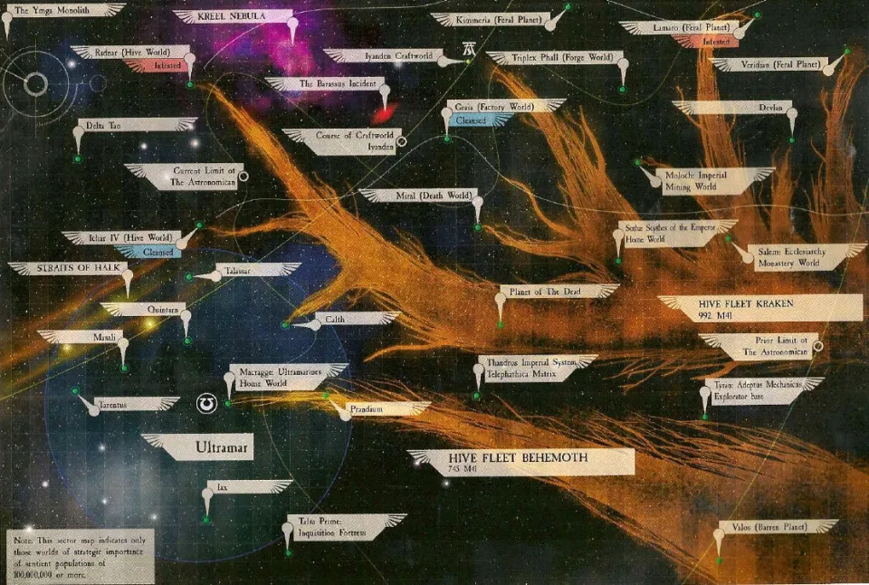
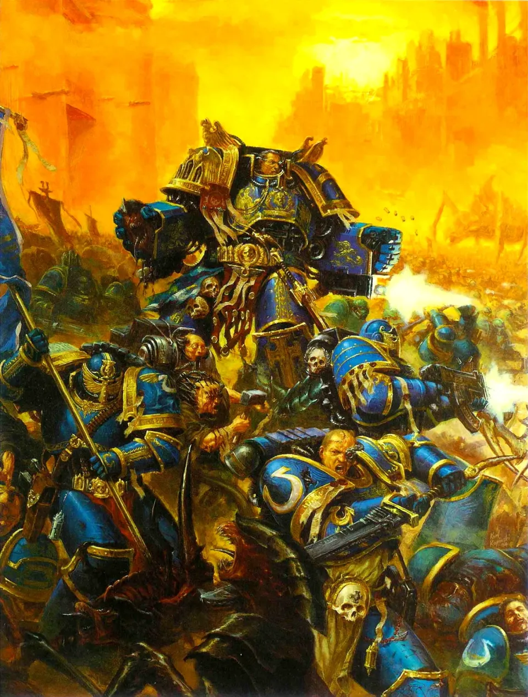
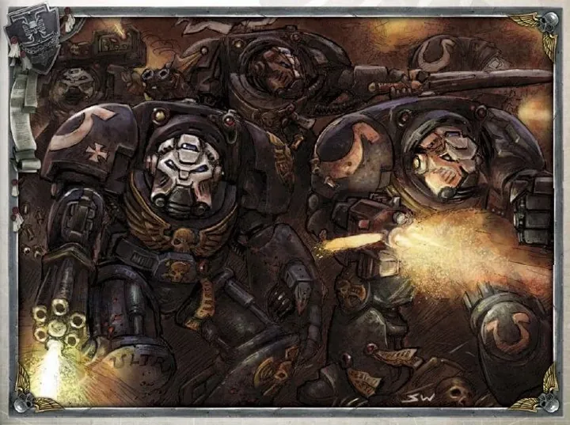
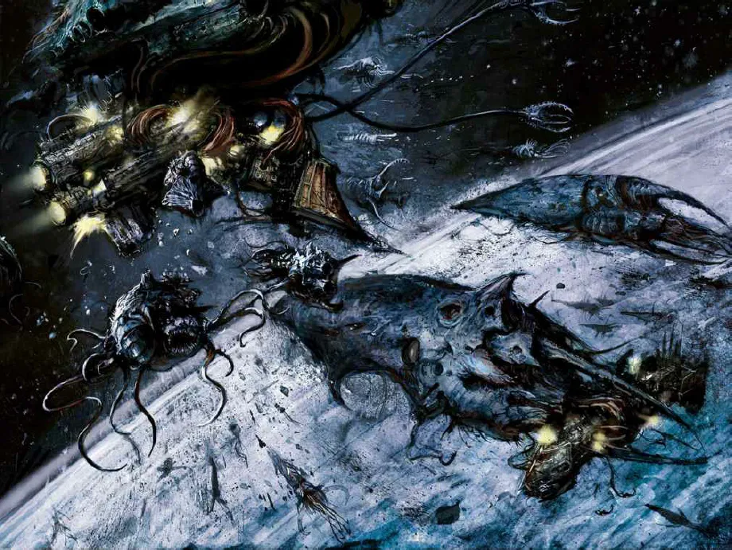
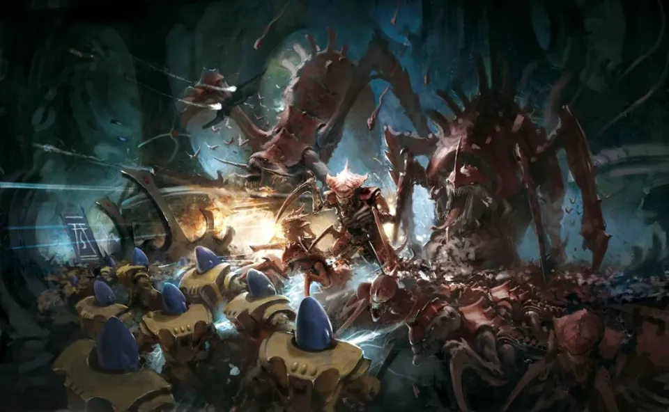
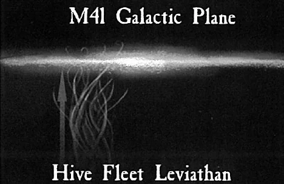
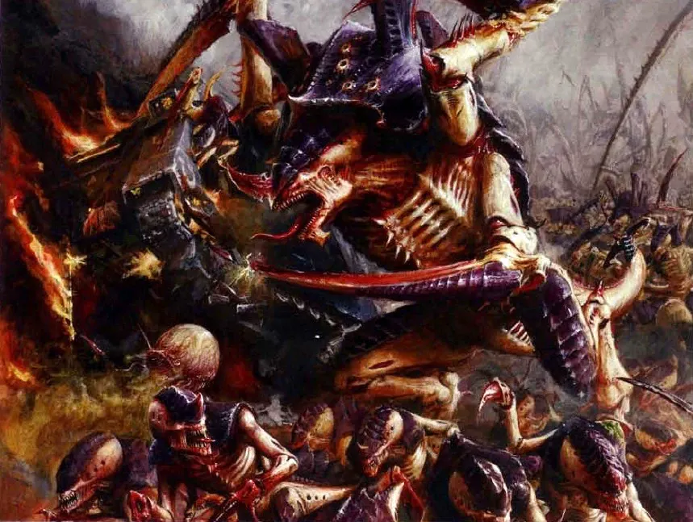

01ภาพรวม: ศัตรูจากความว่างเปล่า
Tyranid (ไทรานิด) คือเผ่าสิ่งมีชีวิตที่มาจากนอกกาแล็กซี ทุกตัวเชื่อมกันด้วยจิตรวม (Hive Mind) พวกมันเดินทางเป็นฝูงเรือชีวภาพที่เรียกว่า Hive Fleet กลืนกินทุกชีวิตบนดาวทั้งดวงจนเหลือแต่หินเปล่า แล้วนำชีวมวลไปสร้างนักรบรุ่นใหม่ที่ปรับตัวเพื่อรับมือศัตรูโดยเฉพาะ
จักรวรรดิตั้งชื่อฝูงตามสัตว์ประหลาดในตำนานโบราณของโลก สงครามกับ Tyranid ถูกนับเป็นสี่ครั้งใหญ่ แต่ละครั้งเลวร้ายกว่าครั้งก่อน

สิ่งที่ทำให้ Tyranid น่ากลัวเป็นพิเศษคือ "เงาใน Warp" — จิตรวมของพวกมันรบกวน Warp จน Astropath ส่งข้อความไม่ได้และ Navigator นำทางไม่ได้ ดาวที่ถูกบุกจึงมักถูกตัดขาดก่อนจะได้ขอความช่วยเหลือ
02สงครามครั้งที่ 1: Hive Fleet Behemoth
การบุกครั้งแรกที่บันทึกไว้คือที่สถานีวิจัยบนดาว Tyran Primus ก่อนถูกกลืน Magos Varnak แห่ง Mechanicus ซ่อนข้อมูลเกี่ยวกับผู้บุกรุกไว้ลึกใต้ดิน Inquisitor Fidus Kryptman แห่ง Ordo Xenos มาถึงช้าไป แต่ได้ข้อมูลนั้นและตั้งชื่อฝูงนี้ว่า "Behemoth"
Kryptman ไล่ตามรอยดาวที่ถูกกินจนว่างเปล่า และพบว่าเป้าหมายต่อไปคือ Ultramar เขาส่งคำเตือนผ่าน Astropath ที่เลือดไหลออกจากจมูกและหู และมีเพียงเสียงเดียวที่ตอบกลับ — จาก Macragge
Prandium ล่ม
Marneus Calgar Chapter Master ของ Ultramarines ส่งกองเรือสกัดที่ดาวสวน Prandium "อัญมณีแห่ง Ultramar" แต่ยุทธวิธีโจมตีแล้วถอยตาม Codex Astartes ใช้ไม่ได้กับ Tyranid Prandium ถูกกลืนทั้งดาว
Calgar อดอาหารหนึ่งสัปดาห์
Calgar นั่งสมาธิโดยไม่กินไม่ดื่มเจ็ดวัน แล้วประกาศว่า Ultramarines มีบาปแห่งความหยิ่งผยอง "Codex Astartes ถูกเขียนเพื่อ Space Marine ไม่ใช่ Space Marine ถูกสร้างเพื่อ Codex" พวกเขาเลือกตั้งรับแบบรวมกำลังที่ป้อม Fortress of Hera บน Macragge
ศึก Macragge
Space Marine ทุกนายลงสนาม สปอร์ของ Tyranid ตกลงมานับล้าน ซากกองสูงสิบชั้นรอบปืนเลเซอร์ทางเหนือ 1st Company ทั้งหมดของ Ultramarines ถูกสังหาร ขณะที่ Calgar บาดเจ็บสาหัส
Dominus Astra เสียสละ
Kryptman พบจุดอ่อน — เมื่อเรือชีวภาพหลักถูกทำลาย เรือรอบข้างจะสับสน แต่ Behemoth แบ่งเป็นสองกอง ชัยชนะครั้งแรกทำลายได้เพียงครึ่งเดียว จนกองเรือ Battlefleet Tempestus มาถึง และเรือธง Dominus Astra พุ่งเข้ากลางฝูงแล้วระเบิดเครื่องยนต์ Warp ดึงตัวเองกับฝูง Tyranid หายไปด้วยกัน


Ultramarines ใช้เวลาเกือบร้อยปีกว่าจะฟื้นกำลัง ทหารที่รอดจากศึกนี้ได้รับเกียรติเป็น Tyrannic War Veteran และสัตว์ประหลาดที่เหลืออยู่ เช่น Carnifex ชื่อ Old One Eye ยังเดินอยู่ใน Ultramar
03สงครามครั้งที่ 2: Hive Fleet Kraken
250 ปีต่อมา ข้าราชการเริ่มบ่นว่าการเฝ้าระวังทางตะวันออกสิ้นเปลือง และดาวชายแดนเกิดจลาจลอย่างไม่มีเหตุผล Inquisition สงสัยและพบว่าข้าราชการที่บ่นทั้งหมดเคยไปภูมิภาคนั้น — สัญญาณของ Genestealer Cult ที่มาก่อนฝูง Tyranid
Kraken ต่างจาก Behemoth เพราะแยกเป็นฝูงเล็กหลายสิบฝูงบุกหลายดาวพร้อมกัน เงาใน Warp ขยายใหญ่ขึ้นสิบเท่า ทั้งภาคถูกตัดขาดข้ามคืน
Ichar IV
ดาวอุตสาหกรรมที่ถูกลัทธิชื่อ "Brotherhood" ยึดครอง Inquisitor Agmar พบว่าผู้นำคือ Genestealer Patriarch Ultramarines บุกลงไปสังหารมัน แต่เสียงเรียกทางจิตของมันดึง Kraken มาถึง Marneus Calgar นำการรบเกือบหนึ่งปีจนขับไล่ได้ ทิ้งดาวไว้เป็นซากศพ
Craftworld Iyanden
Craftworld ของ Aeldari ต้องระดมพลทุกคนเป็นทหารเป็นครั้งแรกนับตั้งแต่ The Fall กองเรือถูกทำลาย ฝูงบุกเข้าถึงในเรือ ป่าศักดิ์สิทธิ์ถูกกลืน จนเจ้าชาย Yriel ผู้ถูกเนรเทศกลับมาพร้อมกองเรือโจรสลัดช่วยไว้ได้ — แต่ประชากรส่วนใหญ่ตาย Iyanden ต้องพึ่งนักรบวิญญาณ (Wraith) นับแต่นั้น


04สงครามครั้งที่ 3: Hive Fleet Leviathan
ในปี 997.M41 ไม่ถึงห้าปีหลัง Kraken Kryptman สังเกตสัญญาณการบุกครั้งใหม่ เขาใช้ "Kryptman Census" — เผา Astropath นับสิบเพื่อติดต่อดาวทุกขอบจักรวรรดิ และวาดเส้นทางจากดาวที่ไม่ตอบกลับ Leviathan บุกจากใต้ระนาบกาแล็กซี เป็นสองปีกเหมือนขากรรไกรที่หุบเข้า ตัดขาดพื้นที่มหาศาล

Gryphonne IV ล่ม
Forge World Gryphonne IV บ้านของ Titan Legion "War Griffons" ถูกกลืน
Exterminatus ป้องกัน
Kryptman สั่งอพยพและทำ Exterminatus ดาวทุกดวงในแนวกันชน เพื่อไม่ให้ฝูงได้ชีวมวลเพิ่ม การกระทำนี้ทำให้เขาถูก Inquisition ด้วยกันประณาม
ให้ศัตรูกินกันเอง
Kryptman ใช้ Genestealer ที่จับได้ล่อฝูง Leviathan ไปที่จักรวรรดิ Ork ของ Octarius สองเผ่ารบกันจนแทบลืมจักรวรรดิ แต่ผู้เชี่ยวชาญกังวลว่า Tyranid จะได้ DNA ที่แข็งแกร่งของ Ork ไปสร้างนักรบที่ใหญ่กว่าเดิม
Devastation of Baal
ฝูงที่ใหญ่ที่สุดของ Leviathan ล้อมดาวบ้านเกิดของ Blood Angels และถูกทำลายในที่สุด ถือเป็นจุดจบของสงครามครั้งที่สาม → อ่านเต็ม

05สงครามครั้งที่ 4 และอนาคต
ในยุค Era Indomitus ขณะที่จักรวรรดิวุ่นอยู่กับ Chaos ที่ทะลักจาก Great Rift Leviathan ระลอกใหม่ที่ใหญ่กว่าทุกครั้ง แบ่งเป็นฝูง Nautilon, Promethor และ Grendyllus บุกฝั่งตะวันตกของกาแล็กซี (Segmentum Pacificus) มุ่งหน้าสู่ Terra — นี่คือฉากของ Warhammer 40,000 ฉบับที่ 10 และเกม Space Marine 2
หน่วยวิเคราะห์ลับของจักรวรรดิสรุปว่า Hive Fleet ทั้งหมดที่เจอมาอาจเป็นเพียงส่วนหน้าของกองทัพที่ใหญ่กว่ามาก ซึ่งจะมาถึงภายในไม่ถึงร้อยปี และจักรวรรดิต้องเพิ่มกำลังพลอย่างน้อยห้าสิบเท่าจึงจะรับมือได้
06แหล่งข้อมูลและหมายเหตุ
เนื้อหาหน้านี้สรุปและแปลเป็นภาษาไทยจากบทความใน Warhammer 40k Wiki (Fandom) ซึ่งเรียบเรียงจากหนังสือ Codex, หนังสือชุด Horus Heresy ของ Forge World และนิยาย Black Library ด้านล่างนี้ (ตรวจสอบ ต.ค. 2026)
เนื้อเรื่อง Warhammer ถูกเขียนเพิ่มและแก้ไขมาตลอดหลายสิบปี ปี จำนวน และรายละเอียดบางจุดต่างกันไปตามหนังสือแต่ละเล่ม หน้านี้ใช้ฉบับที่แหล่งอ้างอิงส่วนใหญ่ยอมรับ และบอกไว้เมื่อมีหลายฉบับ